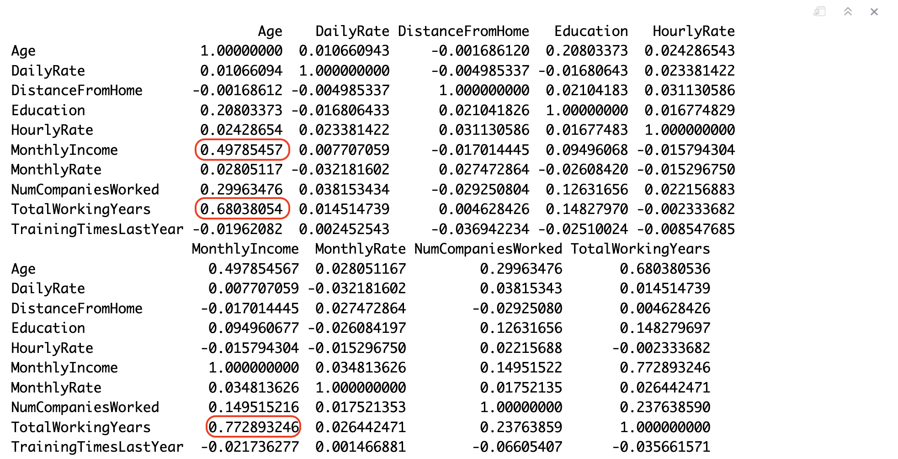
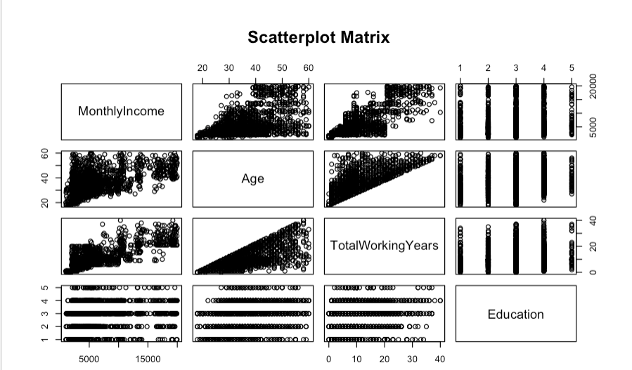
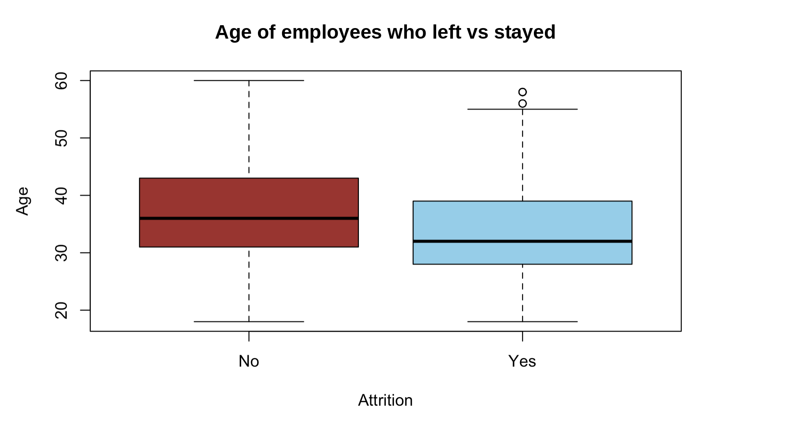
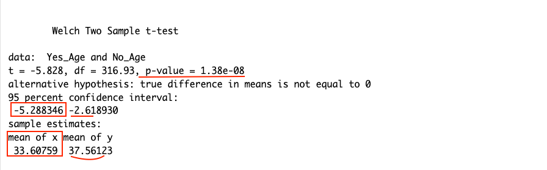
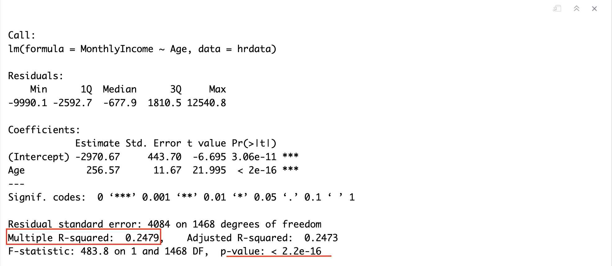
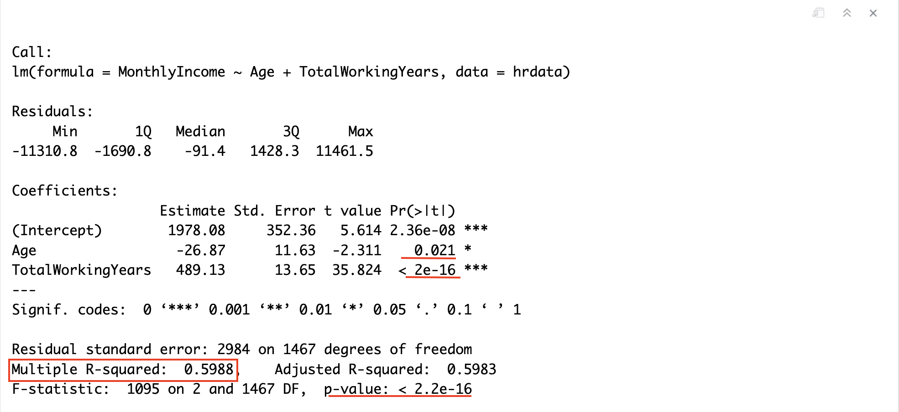

What Predicts Pay and Who Leaves?
R · Regression · Hypothesis testingQuestion
Do employees who leave a company differ in age from those who stay, and how well do age and experience predict monthly income?
Approach
Explored 1,470 employee records in R with a correlation matrix, compared the ages of leavers and stayers with a t test, and fit two linear regression models for monthly income.
Result
Employees who left were younger on average (33.6 vs 37.6 years), a difference very unlikely to be chance. Age alone explained 25% of the variation in income. Adding total working years raised that to 60%.
Which numbers move together?
I started with a correlation matrix of ten numeric columns. A correlation runs from -1 to 1, and the closer it is to 1, the more two columns rise together.
cor(hrdata[, c("Age", "DailyRate", "DistanceFromHome", "Education", "HourlyRate",
"MonthlyIncome", "MonthlyRate", "NumCompaniesWorked",
"TotalWorkingYears", "TrainingTimesLastYear")])
Three pairs stood out. Total working years and monthly income had the strongest link (0.77), followed by age and total working years (0.68), then age and monthly income (0.50). Most other pairs were close to zero.
A scatterplot matrix shows the same relationships as pictures. Income climbs with working years, and working years can never be more than age allows, which gives that plot its triangle shape.
pairs(~MonthlyIncome+Age+TotalWorkingYears+Education,
data = hrdata,
main = "Scatterplot Matrix")
Do employees who leave differ in age?
Of the 1,470 employees, 237 left the company (16%). A boxplot of age for each group suggests the leavers skew younger.
boxplot(Age~Attrition, data = hrdata,
main = "Age of employees who left vs stayed",
xlab = "Attrition", ylab = "Age",
col = c("brown", "skyblue"))
A picture can mislead, so I tested it. A t test asks whether a gap between two averages is bigger than chance alone would produce.
Yes_Age <- hrdata[(hrdata$Attrition == "Yes"), 'Age']
No_Age <- hrdata[(hrdata$Attrition == "No"), 'Age']
t.test(Yes_Age, No_Age)
Employees who left averaged 33.6 years old, and those who stayed averaged 37.6. The p value is far below 0.05, so a gap this size is very unlikely to be chance. One limit: attrition here means leaving for any reason. The data does not say why someone left.
How well do age and experience predict income?
The first model predicts monthly income from age alone.
Model1 = lm(MonthlyIncome ~ Age, data = hrdata)
summary(Model1)
Each extra year of age goes with about $257 more in monthly income, and age explains 25% of the variation in income.
The second model adds total working years.
Model2 = lm(MonthlyIncome ~ Age + TotalWorkingYears, data = hrdata)
summary(Model2)
Now the model explains 60% of the variation. Each working year goes with about $489 more per month, while the effect of age shrinks to almost nothing and turns slightly negative. In this data, experience predicts pay, and age mostly stood in for experience in the first model.
| Employees | 1,470 |
| Left the company | 237 (16%) |
| Average age, left | 33.6 |
| Average age, stayed | 37.6 |
| Income variation explained, age only | 25% |
| Income variation explained, age and working years | 60% |
Bootcamp project. The data is a fictional practice dataset created by IBM data scientists and shared on Kaggle, so the results show the method, not facts about a real workforce.
What I'd do next
Predict which employees are likely to leave with a logistic regression, and check the predictions with a confusion matrix.